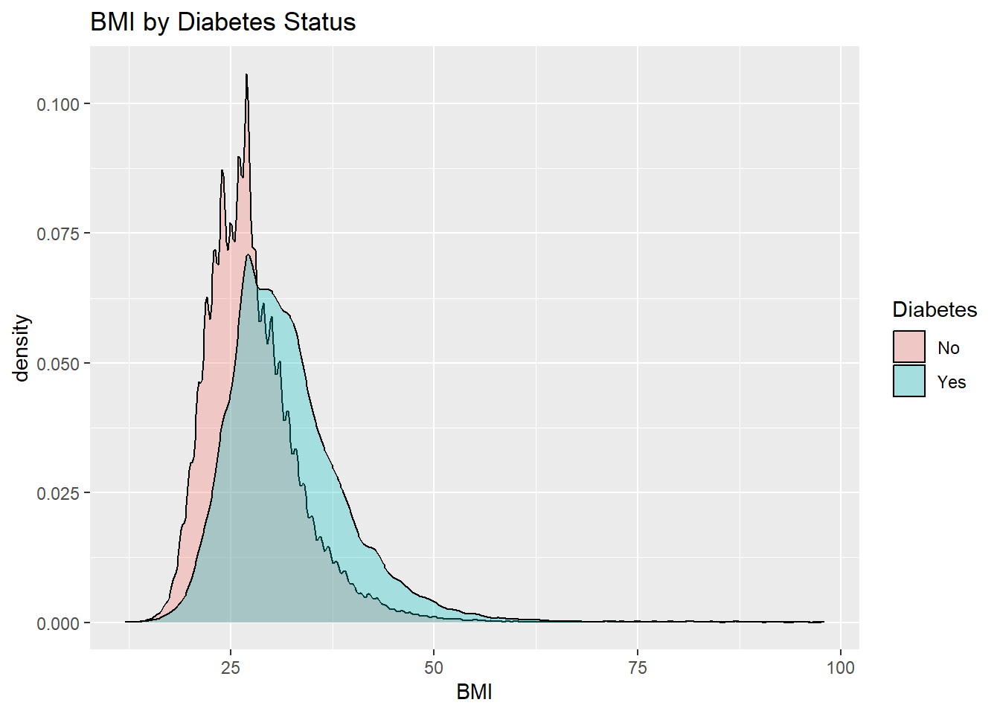
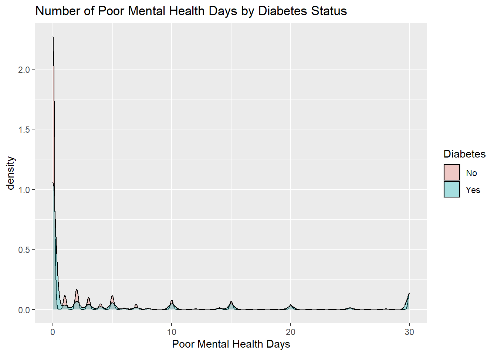
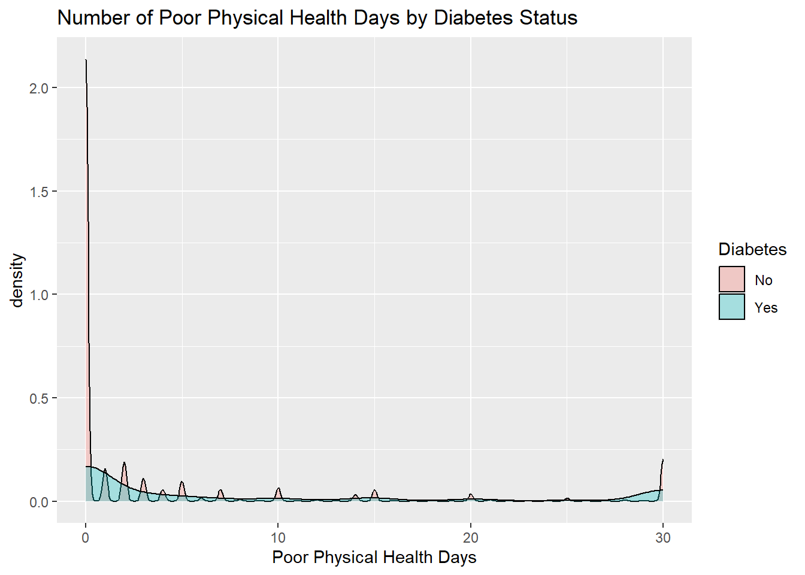
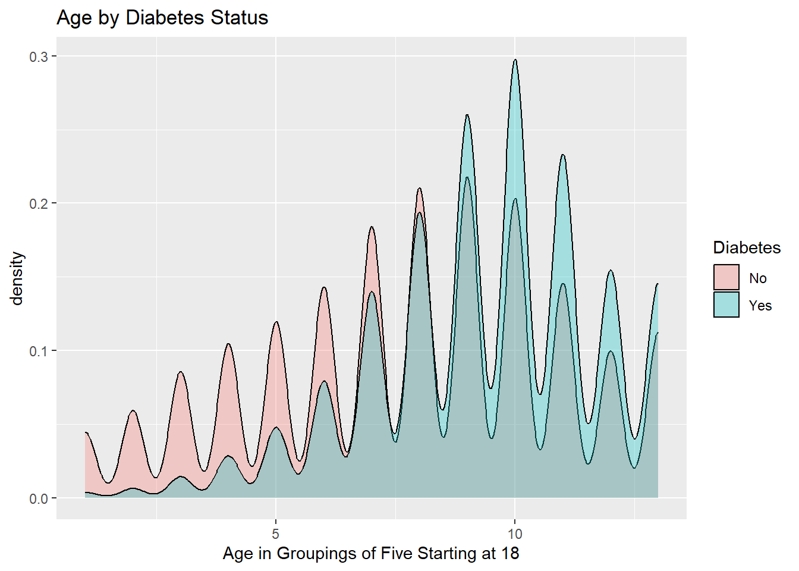
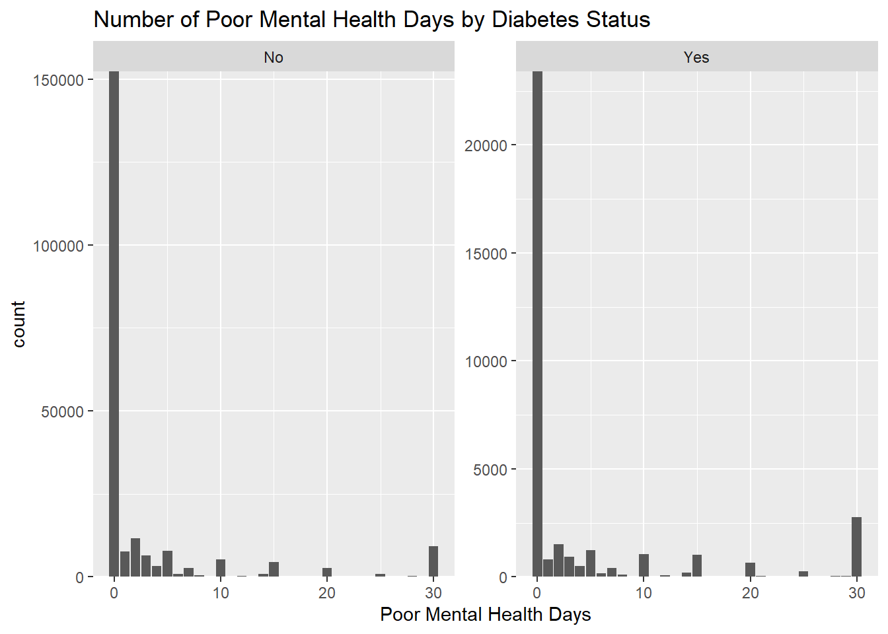
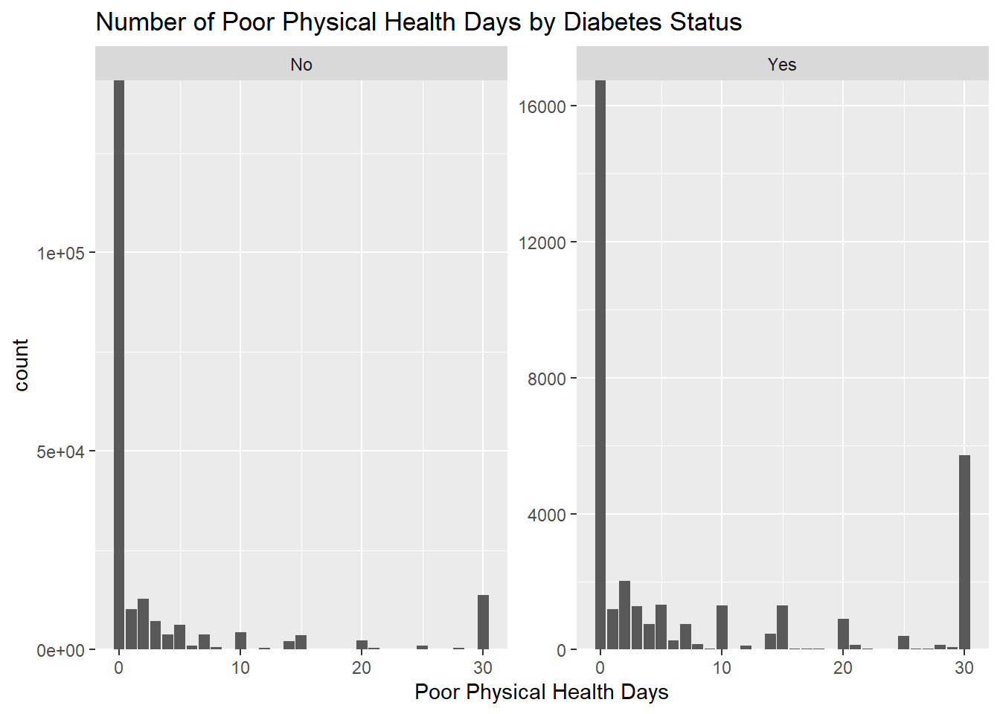

── Attaching core tidyverse packages ──────────────────────── tidyverse 2.0.0 ──
✔ dplyr 1.1.4 ✔ readr 2.1.5
✔ forcats 1.0.0 ✔ stringr 1.5.1
✔ ggplot2 3.5.1 ✔ tibble 3.2.1
✔ lubridate 1.9.3 ✔ tidyr 1.3.1
✔ purrr 1.0.2
── Conflicts ────────────────────────────────────────── tidyverse_conflicts() ──
✖ dplyr::filter() masks stats::filter()
✖ dplyr::lag() masks stats::lag()
ℹ Use the conflicted package (<http://conflicted.r-lib.org/>) to force all conflicts to become errors
# Reading in CSV file of DHI datadhi_data <-read_csv("diabetes_binary_health_indicators_BRFSS2015.csv")
Rows: 253680 Columns: 22
── Column specification ────────────────────────────────────────────────────────
Delimiter: ","
dbl (22): Diabetes_binary, HighBP, HighChol, CholCheck, BMI, Smoker, Stroke,...
ℹ Use `spec()` to retrieve the full column specification for this data.
ℹ Specify the column types or set `show_col_types = FALSE` to quiet this message.
Now we need to create some summary stats and to start we are going to look at the summaries of some numeric variables to start. We will also be doing this while grouping by the Diabetes column as we want to see how these variables impact Diabetes status.
# Creating function to grab numeric summary statsnumeric_summary <-function(data, group_var ="Diabetes"){# Selecting numeric vars num_vars <- data |>select(where(is.numeric))# Creating empty list num_sum_list <-list()# Looping summary stats for(num_var incolnames(num_vars)){# Grouping by group_var num_sums <- data |>group_by(across(all_of(group_var)))|>summarize(across(all_of(num_var), .fns =list("mean"= mean, # This will create a named list with .fns"median"= median,"sd"= sd,"IQR"= IQR,"min"= min,"max"= max),.names ="{.fn}")) # .fn is function names num_sums <- num_sums |>mutate(variable = num_var) num_sums <- num_sums |>select(variable, everything()) num_sum_list[[num_var]] <- num_sums }return(num_sum_list)}# Running function num_sums <-numeric_summary(dhi_data)# Printing columns outnum_sums
$BMI
# A tibble: 2 × 8
variable Diabetes mean median sd IQR min max
<chr> <fct> <dbl> <dbl> <dbl> <dbl> <dbl> <dbl>
1 BMI No 27.8 27 6.29 7 12 98
2 BMI Yes 31.9 31 7.36 8 13 98
$MentHlth
# A tibble: 2 × 8
variable Diabetes mean median sd IQR min max
<chr> <fct> <dbl> <dbl> <dbl> <dbl> <dbl> <dbl>
1 MentHlth No 2.98 0 7.11 2 0 30
2 MentHlth Yes 4.46 0 8.95 3 0 30
$PhysHlth
# A tibble: 2 × 8
variable Diabetes mean median sd IQR min max
<chr> <fct> <dbl> <dbl> <dbl> <dbl> <dbl> <dbl>
1 PhysHlth No 3.64 0 8.06 2 0 30
2 PhysHlth Yes 7.95 1 11.3 15 0 30
$Age
# A tibble: 2 × 8
variable Diabetes mean median sd IQR min max
<chr> <fct> <dbl> <dbl> <dbl> <dbl> <dbl> <dbl>
1 Age No 7.81 8 3.10 4 1 13
2 Age Yes 9.38 10 2.33 3 1 13
Some interesting findings can be found based off these results. The first being that the mean and median BMI is lower in the No Diabetes group (27.8/27 to 31.9/31), the mean poor mental health days was lower in the No diabetes group (2.98 to 4.46) but the median was zero for both, the mean was also much higher in the yes diabetes group for number of poor physical health days (3.64 to 7.95) but again the medians were not signficanlty different (0 to 1), and finally we find that the mean and median were higher in the yes diabetes group for age (7.81/8 to 9.38/10). This could indicate that the MentHlth and PhysHlth variables have data that is skewed with most individuals having no issues most days, but a few individuals with a lot of negative days. To investiage further we should look at some density plots and some bar plots.
# Creating densityplots while colored by Diabetes statusggplot(dhi_data, aes(x = BMI, fill = Diabetes)) +geom_density(alpha=0.3) +ggtitle("BMI by Diabetes Status") +xlab("BMI")

ggplot(dhi_data, aes(x = MentHlth, fill = Diabetes)) +geom_density(alpha=0.3) +ggtitle("Number of Poor Mental Health Days by Diabetes Status") +xlab("Poor Mental Health Days")

ggplot(dhi_data, aes(x = PhysHlth, fill = Diabetes)) +geom_density(alpha=0.3) +ggtitle("Number of Poor Physical Health Days by Diabetes Status") +xlab("Poor Physical Health Days")

ggplot(dhi_data, aes(x = Age, fill = Diabetes)) +geom_density(alpha=0.3) +ggtitle("Age by Diabetes Status") +xlab("Age in Groupings of Five Starting at 18")

# Creating Barplots for MentHlth, PhysHlth, and Age as they are on scalesggplot(dhi_data, aes(x = MentHlth)) +geom_bar() +ggtitle("Number of Poor Mental Health Days by Diabetes Status") +xlab("Poor Mental Health Days") +facet_wrap(~Diabetes, scales ="free_y") +# Making graphs the same scale to aid comparisonscale_y_continuous(expand =c(0, 0))

ggplot(dhi_data, aes(x = PhysHlth)) +geom_bar() +ggtitle("Number of Poor Physical Health Days by Diabetes Status") +xlab("Poor Physical Health Days") +facet_wrap(~Diabetes, scales ="free_y") +# Making graphs the same scale to aid comparisonscale_y_continuous(expand =c(0, 0))

ggplot(dhi_data, aes(x = Age)) +geom_bar() +ggtitle("Age by Diabetes Status") +xlab("Age in Groupings of Five Starting at 18") +facet_wrap(~Diabetes, scales ="free_y") +# Making graphs the same scale to aid comparisonscale_y_continuous(expand =c(0, 0))